小王子 The Little Prince
献给列翁.维尔特
献给还是小男孩的莱翁·维尔特
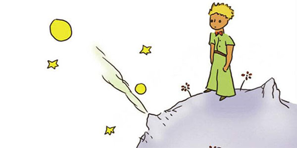
第1章
我六岁那年，在一本描写原始森林的名叫《真实的故事》的书上
第2章
我孤独地生活着，没有一个真正谈得来的人，直到六年前，有一次飞机出了故障
第3章
很久以后，我才弄明白他是从哪儿来的
第4章
我由此知道了另一件很重要的事情：他居住的星球比一座房子大不了多少
第5章
每天我都会知道一些情况，或者是关于他的星球
第6章
哦，小王子！就这样，我一点一点知道了你那段忧郁的生活
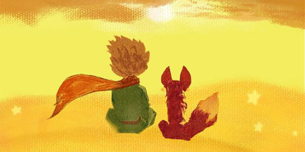
第7章
第五天，还是羊的事情，把小王子生活的秘密向我揭开了
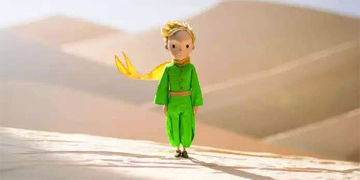
第8章
我很快就对这朵花儿有了更多的了解
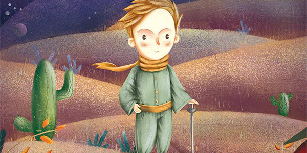
第9章
我想他是趁一群野鸟迁徙的机会出走的
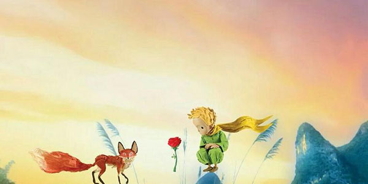
第10章
这颗星球附近，还有325号、326号、327号、328号、329号和330号小行星
第11章
第二颗行星上住着一个爱虚荣的人
第12章
下一颗行星上住着一个酒鬼
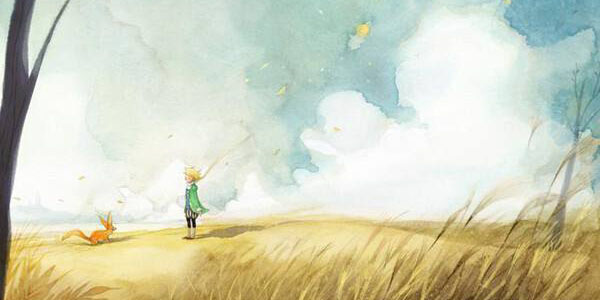
第13章
第四颗行星是个商人的星球
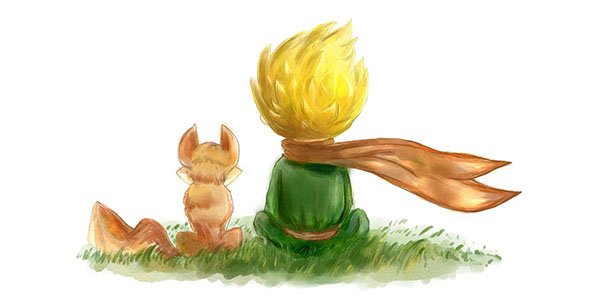
第14章
第五颗行星非常奇怪。这是最小的一颗
第15章
第六颗行星是一颗大十倍的行星。上面住着一个老先生，他在写一本本大部头的著作。
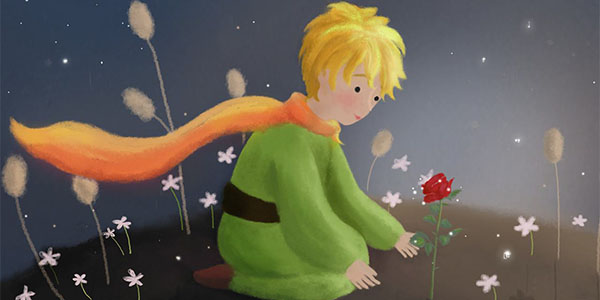
第16章
第七颗行星就是地球了
第17章
一个人如果想把话说得有趣些，免不了会稍稍撒点谎
第18章
小王子穿过沙漠，只见到了一朵花儿
第19章
小王子攀上一座高山。他过去只见过三座齐膝高的火山
第20章
小王子在沙漠、山岩和雪地上走了很长时间以后，终于发现了一条路。所有的路都通往有人住的地方。
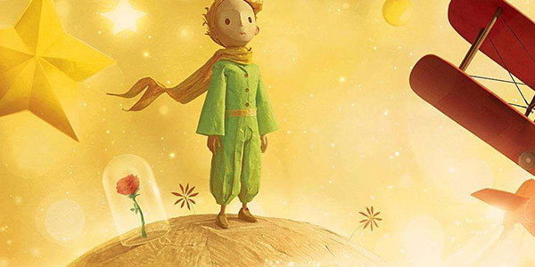
第21章
就在这时狐狸出现了
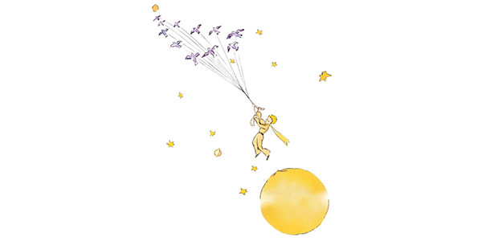
第22章
“你好。"小王子说道。"你好。"扳道工说道。
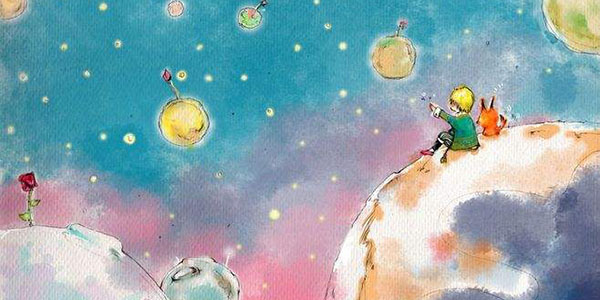
第23章
“你好。"小王子说。"你好。"商人说道。
第24章
这是我降落在沙漠后的第八天，我听着这个商人的故事，喝完了最后一滴备用水
第25章
“人们挤进快车，”小王子说，“可是又不知道还要去寻找什么。所以他们忙忙碌碌，转来转去……”
第26章
第二天傍晚，我干完活儿回来，远远地看见小王子两腿悬空地坐在断墙上
第27章
已经过去六年了……我还从来没跟人讲过这个故事